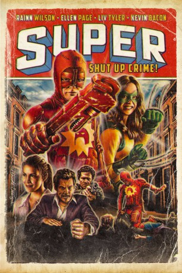
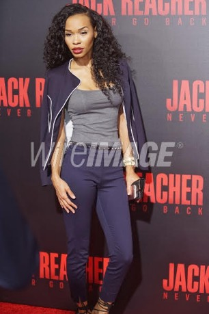

#6038 Super - Shut Up, Crime!
Alternativ: Super
 
 IMDB-Wertung: 6.8 / 10
IMDB-Wertung: 6.8 / 10  Metascore: 0
Metascore: 0 
Im normalen Leben ist Frank das, was man landläufig als arme Sau bezeichnet würde: ein unter Depressionen und Neurosen leidender Schnellimbiss-Koch. Als seine Frau unter den Einfluss eines besonders fiesen Kleinverbrechers gerät und Frank verlässt, verschwindet auch das letzte Regulativ aus dem Leben des Verlierers. Fortan zwängt er sich allabendlich in sein mühselig zusammengeflicktes Kostüm - nicht unbedingt um Gutes zu tun und zu den Gewinnern zu gehören, sondern um endlich mal auf die Kacke zu hauen: Als Superheld "Der Blutrote Blitz" geht er unverdrossen seiner Arbeit nach. Beistand leistet ihm dabei bereitwilligst die nicht minder verstörende nymphomane Comic-Verkäuferin Libby als sein Sidekick "Blitzie".
Jahr: 2010
Dauer: 95 Minuten
FSK: 18
Land: USA Studio: IFC MidnightTonspuren: DTS - ,
Untertitel: Deutsch,
Auflösung: 1080p (1920x1040) Größe: 5488 MB
Genre: Drama, Komödie, Krimi
Regisseur: James Gunn
Drehbuch: Jörg Buttgereit
Soundtrack:
Darsteller:
 Rainn Wilson als Frank Darbo
Rainn Wilson als Frank Darbo- Ellen Page als Libby
 Liv Tyler als Sarah
Liv Tyler als Sarah Kevin Bacon als Jacques
Kevin Bacon als Jacques Gregg Henry als Detective John Felkner
Gregg Henry als Detective John Felkner Michael Rooker als Abe
Michael Rooker als Abe Andre Royo als Hamilton
Andre Royo als Hamilton- Sean Gunn als Toby
 Stephen Blackehart als Quill
Stephen Blackehart als Quill Linda Cardellini als Pet Store Employee
Linda Cardellini als Pet Store Employee Nathan Fillion als The Holy Avenger
Nathan Fillion als The Holy Avenger- Gerardo Davila als Cop
- Paul T. Taylor als Frank Sr.
- Connor Day als Teenage Frank
- James Gunn als Demonswill
- Mikaela Hoover als Holly
- Nick Holmes als Jim
- Rob Zombie als God
 Steve Agee als Comic Book Store Jerk
Steve Agee als Comic Book Store Jerk- Laurel Whitsett als Librarian
- James Lentzsch als Passenger Teen
- Nate Rubin als Driving Teen
- Danny Cosmo als Purse-Snatcher
- Russell Towery als Chickenhawk
- Mollie Milligan als Sarah's Sister
- Valentine Miele als Line Butter
- Michelle Gunn als Line Butter's Girlfriend
-  Darcel White Moreno als Waitress
 Greg Ingram als Long-Haired Hood
Greg Ingram als Long-Haired Hood- Brandon Belknap als Christian
- Zach Gilford als Jerry
 Lloyd Kaufman als 911 Man
Lloyd Kaufman als 911 Man Tim J. Smith als Range's Technician
Tim J. Smith als Range's Technician Mark De Alessandro als Thug Jumped on by Boltie
Mark De Alessandro als Thug Jumped on by Boltie Cole S. McKay als Thug Set on Fire
Cole S. McKay als Thug Set on Fire- John W. Lawson als Thug Missing Arms
- William Katt als Sgt. Fitzgibbon
- Christine Bently als Stoner Girl , uncredited
- Heather Bloom als Mom with Girl , uncredited
 M Charlotte Cheatham als Extra , uncredited
M Charlotte Cheatham als Extra , uncredited- Walt Hollis als Purse Snatcher , uncredited
- Daniel Mignault als Feature / Brother , uncredited
 James Paul als Street Pedestrian , uncredited
James Paul als Street Pedestrian , uncredited- Marchello Stewart als Waiter , uncredited
- Don Mac als Mr. Range
- Grant Goodman als Young Frank
- Matt Moore als Jesus / Guy in Line
- Edrick Browne als Nathaniel
- Krystal Mayo als Wheelchair Woman
- Mario Jimenez als Chicken
Datei: X:\FSK18-2010\Super - Shut Up, Crime! (2010, FSK18, 1920x1040).mkv seit 24.04.2017
Festplatte: FSK18
 Es gibt insgesamt 35 Filme in der Gruppe 'FSK18-2010'
Es gibt insgesamt 35 Filme in der Gruppe 'FSK18-2010'